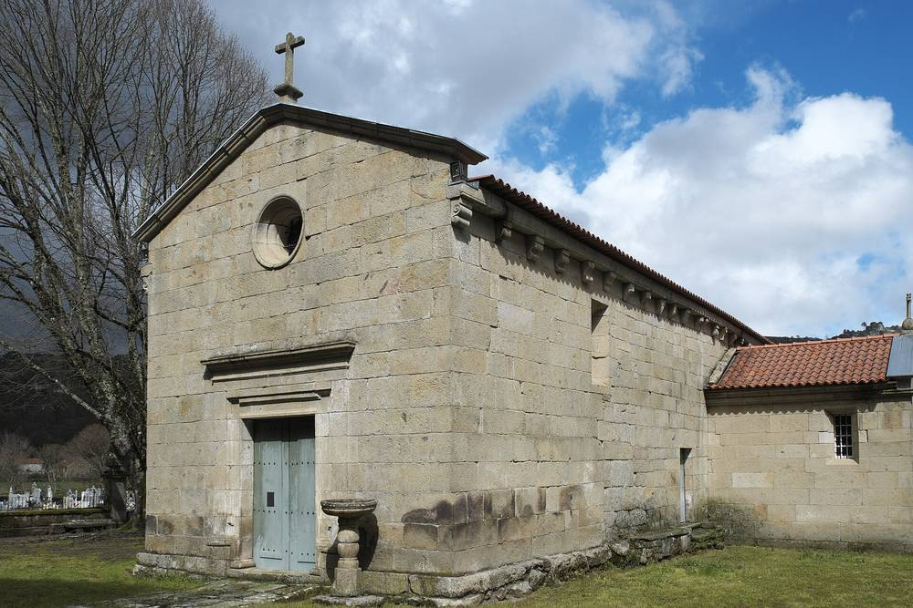

포르투갈 농촌 저항 연결망 브라바 1년, 35개 지역 모임 지원…에너지 전환은 주민 말 듣고 분산돼야

대형 태양광 단지·리튬 광산 반대 모임을 법률·재정 지원 단체와 연결, 반대하는 것은 전환이 아니라 대기업으로의 부 집중이라고 밝혀…6일 리스본서 1년 결산 모임
포르투갈에서 대형 개발 사업에 맞서는 농촌 주민들을 돕는 전국 연결망 '브라바 — 농촌 저항 연결망(Brava – Rede de Resistência Rural)'이 출범 1년을 맞았다. 지난해 11월 만들어진 브라바는 지금 전국 35개 환경 수호 모임을 지원하며, 푼당(Fundão)의 소피아 태양광 단지나 코바스 두 바호주의 리튬 광산처럼 대형 사업에 맞서는 지역 모임을 법률·재정·전략 지원 단체와 잇고 있다. 올해는 환경단체 제로(Zero) 등과 함께 만든 '농촌 저항 매뉴얼'을 무료로 내놓았고, 여러 지역의 태양광 단지 반대 공동체가 모인 '공정·연대 에너지 운동' 플랫폼 결성에도 힘을 보탰다. 공동설립자 길례르므 세로디우는 지금의 에너지 전환이 이윤 극대화에 쏠려 지역 일자리는 적고 이익은 밖으로 빠져나간다며, 자신들이 반대하는 것은 전환 자체가 아니라 대기업·다국적기업으로의 부와 생산 집중이라고 말했다. 그는 환경영향평가 때 주민 의견이 보고서 부록에만 실리고 결정에는 반영되지 않는다고도 비판했다. 포르투갈 정부는 2027년 재생에너지 수용 계획을 내놓아 주민과의 대화를 늘리겠다는 방침이며, 브라바는 11월 6일 리스본에서 1년 결산 모임을 연다. 브라바는 1년 결산에서 그동안 돈·법률 자문·에너지와 지도 제작 기술 등 280건의 지원 제안이 연결망에 들어왔고, 소피아 태양광 단지와 바호주 리튬 광산, 재생에너지 가속 구역을 둘러싼 공공 환경협의 참여가 역대 최고 수준에 이르렀다고 주장했다. 기부로 꾸린 '농촌 저항 기금'은 첫해 3,700유로를 모아 하천 보호·소송 비용 등 5개 사업에 3,000유로를 나눴는데, 기부자 가운데 추첨으로 뽑힌 심사단이 한 번 모여 배분을 정하고 해산하는 방식이며, 2027년에는 3,000유로씩 세 차례, 모두 9,000유로를 나눌 계획이다.
시민에너지 관점
35개 지역 모임이 한 연결망으로 묶였다는 것은 대형 재생에너지·광산 사업에 대한 반발이 몇몇 마을의 고립된 민원이 아니라 전국적인 흐름이 됐다는 신호다. 이 반발을 재생에너지 반대로 읽으면 오판이다. 브라바가 겨냥하는 것은 땅과 경관은 지역이 내주고 이익은 밖으로 나가는 구조이며, 주민 의견이 보고서 부록에 머무는 형식적 협의로는 이 갈등을 풀 수 없다. 국내 대규모 태양광·풍력 단지도 주민 참여를 의견 청취에서 지분과 결정권을 나누는 공동 소유로 끌어올리는 제도를 서둘러 마련해야 한다.
출처: Público 2026-11-05 Marta Loureiro 원문 보기
출처: Agroportal 2026-11-05 Agroportal 원문 보기
ポルトガルの農村抵抗ネットワーク「ブラバ」発足1年、35の地域団体を支援…エネルギー転換は住民の声を聞き分散型であるべき
大規模太陽光発電所やリチウム鉱山に反対する団体を法律・財政支援団体と結ぶ、反対するのは転換ではなく大企業への富の集中だと主張…6日にリスボンで1年の総括集会
ポルトガルで大規模開発事業に立ち向かう農村住民を支える全国ネットワーク「ブラバ――農村抵抗ネットワーク（Brava – Rede de Resistência Rural）」が発足1年を迎えた。昨年11月に生まれたブラバは現在、全国35の環境保護団体を支援しており、フンダンのソフィア太陽光発電所やコヴァス・ド・バローゾのリチウム鉱山のような大規模事業に向き合う地域団体を、法律・財政・戦略面の支援団体とつないでいる。今年は環境団体ゼロ（Zero）などと作った「農村抵抗マニュアル」を無料で公開し、各地の太陽光発電所に反対する住民が集まる「公正で連帯的なエネルギーのための運動」の立ち上げにも力を貸した。共同創設者のギリェルメ・セロディオ氏は、今のエネルギー転換は利益の最大化に偏り、地元の雇用は少なく利益は外へ流れていると指摘し、自分たちが反対しているのは転換そのものではなく、大企業や多国籍企業への富と生産の集中だと語った。同氏は、環境影響評価で住民の意見が報告書の付録に載るだけで決定には反映されないとも批判した。ポルトガル政府は2027年に再生可能エネルギー受容計画を打ち出して住民との対話を増やす方針で、ブラバは11月6日にリスボンで1年の総括集会を開く。ブラバは1年の総括で、この間、資金、法律相談、エネルギーや地図作りの技術など280件の支援の申し出がネットワークに寄せられ、ソフィア太陽光発電所やバローゾのリチウム鉱山、再生可能エネルギー加速区域をめぐる公的な環境協議への参加が過去最高の水準に達したと主張した。寄付でつくる「農村抵抗基金」は初年度に3,700ユーロを集め、河川保護や訴訟費用など5つの事業に3,000ユーロを配分した。寄付者の中から抽選で選ばれた審査団が一度だけ集まって配分を決めて解散する仕組みで、2027年には3,000ユーロずつ3回、計9,000ユーロを配分する計画だ。
市民エネルギーの視点
35の地域団体が一つのネットワークにまとまったことは、大規模な再生可能エネルギーや鉱山事業への反発が、一部の村の孤立した苦情ではなく全国的な流れになったことを示している。この反発を再生可能エネルギーへの反対と読むのは誤りだ。ブラバが問うているのは、土地と景観は地域が差し出し利益は外へ出ていく仕組みであり、住民の意見が報告書の付録にとどまる形だけの協議ではこの対立は解けない。韓国の大規模な太陽光・風力団地も、住民参加を意見聴取から持ち分と決定権を分かち合う共同所有へと引き上げる制度づくりを急ぐべきだ。
出典: Público 2026-11-05 Marta Loureiro 原文を読む
出典: Agroportal 2026-11-05 Agroportal 原文を読む
葡萄牙农村抵抗网络"Brava"成立一年，支持35个地方团体…能源转型应倾听居民、走向分散
把反对大型光伏电站和锂矿的地方团体与法律、资金支持机构连接起来，表示反对的不是转型，而是财富向大企业集中…6日在里斯本举行一周年总结会
在葡萄牙帮助农村居民对抗大型开发项目的全国性网络"Brava——农村抵抗网络"（Brava – Rede de Resistência Rural）迎来成立一周年。Brava于去年11月成立，目前支持全国35个环境保护团体，把对抗丰当（Fundão）索菲亚光伏电站、科瓦斯杜巴罗苏锂矿等大型项目的地方团体，与提供法律、资金和策略支持的机构连接起来。今年它与环保组织Zero等合作推出了免费的《农村抵抗手册》，并协助成立了汇聚各地反对光伏电站社区的"公正与团结能源运动"平台。联合创始人吉列尔梅·塞罗迪奥表示，目前的能源转型偏重利润最大化，当地就业很少、利润外流，他们反对的不是转型本身，而是财富和生产向大企业和跨国公司集中。他还批评说，在环境影响评价中，居民意见只被写进报告附录，却没有反映到决策中。葡萄牙政府计划在2027年推出可再生能源接受度计划，加强与居民的对话；Brava将于11月6日在里斯本举行一周年总结会。Brava在一周年总结中称，一年来网络共收到资金、法律咨询以及能源和制图技术等280项支援提议，围绕索菲亚光伏电站、巴罗苏锂矿和可再生能源加速区的公共环境咨询参与度达到历史最高水平。靠捐款设立的"农村抵抗基金"第一年筹得3,700欧元，向河流保护、诉讼费用等5个项目分配了3,000欧元；分配由从捐款人中抽签选出的评审团开一次会决定，随后解散。2027年计划分三轮、每轮3,000欧元，共分配9,000欧元。
市民能源视角
35个地方团体结成一个网络，说明对大型可再生能源和矿业项目的反弹已不是个别村庄的孤立诉求，而成为全国性的潮流。把这种反弹解读为反对可再生能源是误判。Brava针对的是土地和景观由当地付出、利润却流向外地的结构；居民意见只停留在报告附录里的形式化协商，化解不了这种冲突。韩国的大型光伏和风电园区也应尽快建立制度，把居民参与从听取意见提升到分享股份和决策权的共同所有。
来源: Público（公众报） 2026-11-05 Marta Loureiro 查看原文
来源: Agroportal 2026-11-05 Agroportal 查看原文
Portugal's rural resistance network Brava marks its first year supporting 35 local groups, saying the energy transition must listen to residents and be decentralised
The network links groups opposing large solar plants and lithium mines with legal and financial support, saying it opposes not the transition but the concentration of wealth in big companies; it holds a first-year review in Lisbon on 6 November
Brava – Rede de Resistência Rural, a national network in Portugal that helps rural residents stand up to large development projects, has marked its first anniversary. Founded last November, Brava now supports 35 environmental defence groups across the country, linking local groups facing large projects such as the Sophia solar plant in Fundão and the lithium mine in Covas do Barroso with organisations that offer legal, financial and strategic help. This year it released a free Rural Resistance Manual produced with environmental groups including Zero, and helped set up the Movement for a Fair and Solidarity-Based Energy platform, which brings together communities opposing solar plants in several parts of the country. Co-founder Guilherme Serôdio said the current energy transition is geared to maximising profit, creating few local jobs and sending the profits elsewhere, and that what the network opposes is not the transition itself but the concentration of wealth and production in the hands of large companies and multinationals. He also criticised environmental impact assessments in which residents' views end up only in a report annex without shaping the decision. The Portuguese government plans to launch a renewable energy acceptance plan in 2027 to increase dialogue with residents, and Brava will hold its first-year review in Lisbon on 6 November. In its first-year review, Brava said the network had received 280 offers of support, from money and legal advice to energy and mapping skills, and claimed that public participation in environmental consultations on the Sophia solar plant, the Barroso lithium mine and renewable energy acceleration zones had reached record levels. Its donor-funded Rural Resistance Fund raised 3,700 euros in its first year and gave 3,000 euros to five projects, including river protection and legal costs, through a jury drawn by lot from among donors that meets once to decide and then disbands; for 2027 it plans three rounds of 3,000 euros each, 9,000 euros in total.
Citizen Energy View
That 35 local groups have joined a single network shows that resistance to large renewable and mining projects is no longer a scattered set of village complaints but a national movement. Reading it as opposition to renewable energy would be a mistake. What Brava targets is a model in which communities give up their land and landscape while the profits leave, and token consultation in which residents' views stay in a report annex cannot resolve that conflict. Korea's large solar and wind complexes likewise need rules, and soon, that raise resident participation from hearing opinions to co-ownership with a share of both equity and decision-making.
Source: Público 2026-11-05 Marta Loureiro Read the original
Source: Agroportal 2026-11-05 Agroportal Read the original